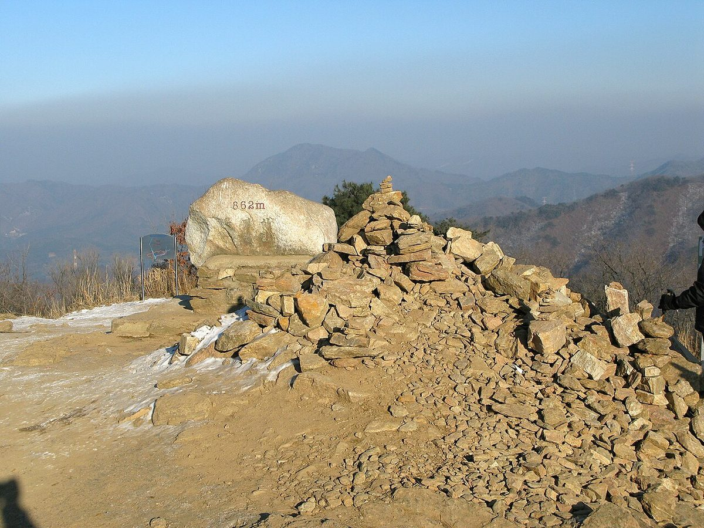
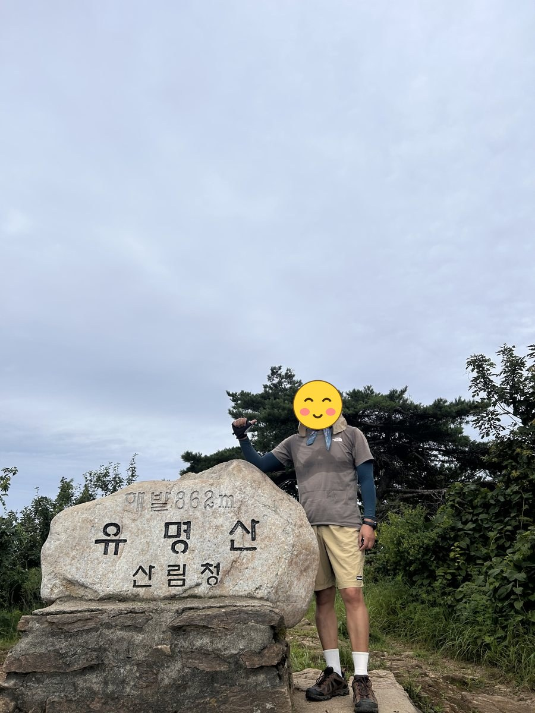
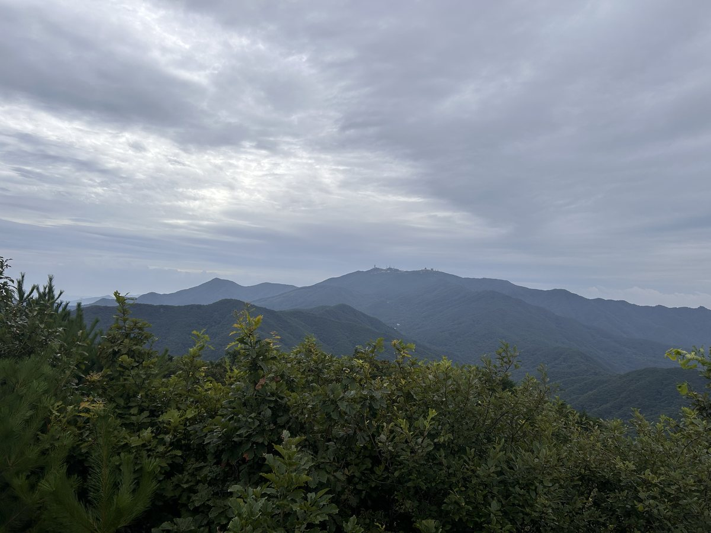
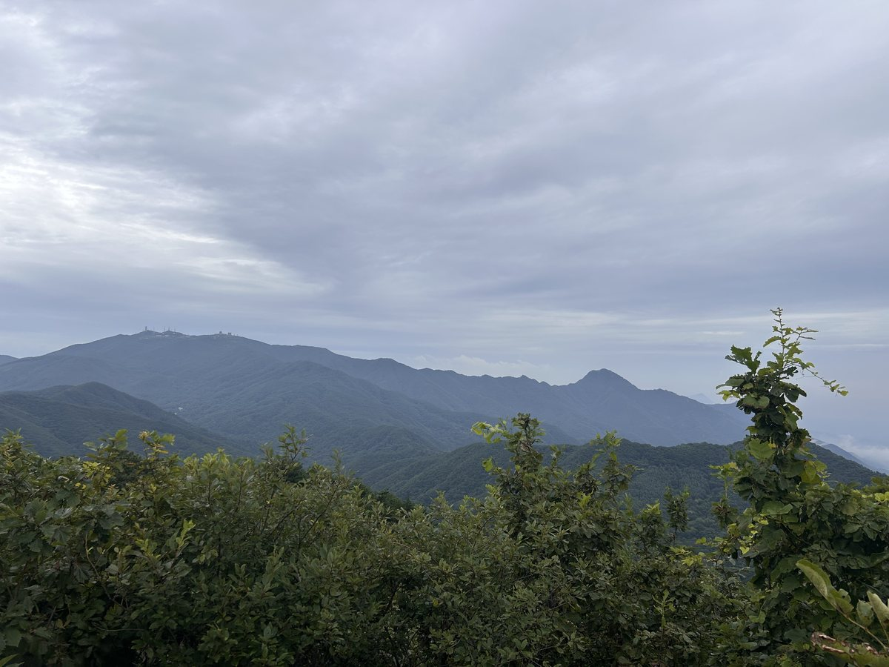
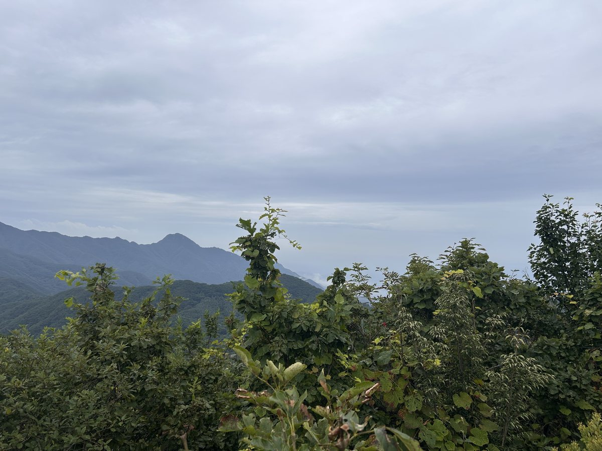
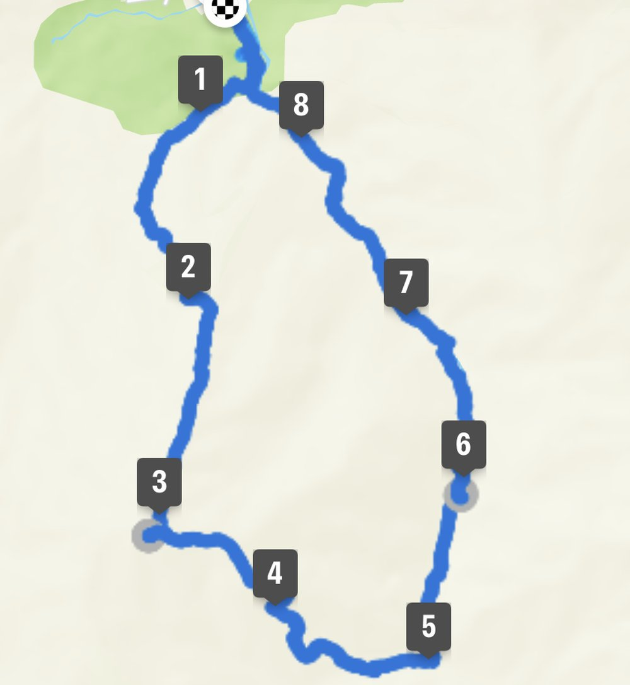

유명산은 가평 설악면과 양평 옥천면 경계에 걸친 862m 산입니다. 국립유명산자연휴양림을 기점으로 삼는 원점회귀 코스가 가장 일반적입니다.
능선으로 올라 정상을 밟고 유명계곡으로 내려오는 구성이 표준입니다. 6~7km 남짓이고 휴식을 포함해 3~4시간이면 충분합니다. 정상까지만 보면 2.3km 정도라 1~2시간이면 닿습니다.
여름에 특히 인기가 높은 이유는 하산길 계곡입니다. 물이 맑고 그늘이 좋아 산행 후 발을 담그고 쉬어 가는 사람이 많습니다. 휴양림 숙박과 묶기도 좋습니다.
등반기록
유명산자연휴양림 → 능선길 → 유명산 정상 → 유명계곡 → 유명산자연휴양림
유명산자연휴양림에서 출발
토요일 아침 7시 57분, 유명산자연휴양림에서 산행을 시작했습니다. 코스는 능선길로 정상에 오른 뒤 유명계곡으로 내려오는 원점회귀로 잡았네요.
유명산 정상 862m
9시 38분에 정상에 도착했습니다. 출발한 지 1시간 40분쯤 걸렸고, 구름이 많이 낀 날이었지만 건너편 산줄기는 시원하게 보이더군요.




유명계곡으로 하산
정상에서 쉬었다가 10시쯤 유명계곡 쪽으로 내려왔습니다. 12시 57분에 휴양림으로 돌아왔고, 총 8.75km에 5시간이 걸렸습니다.

이 산의 포인트
- 국립유명산자연휴양림 기점 원점회귀
- 유명계곡 — 여름 하산길의 시원한 물길
- 정상까지 2.3km로 짧은 편
- 휴양림 숙박과 묶기 좋은 구성
등산 코스
| 코스 | 거리 | 소요 | 난이도 |
|---|---|---|---|
| 휴양림 원점회귀 (대표) 유명산자연휴양림 → 능선 → 유명산 정상 → 유명계곡 → 원점 |
약 6.2~7.4km | 3~4시간 | 중 |
| 정상 최단 휴양림 → 등산로 → 유명산 정상 |
약 2.3km(편도) | 1시간~1시간 30분 | 하 |
인증장소
유명산 정상 표지석 앞에서 인증합니다.
가는 길
- 자가용
- 국립유명산자연휴양림 주차장을 이용합니다. 휴양림 입장료가 있습니다.
- 대중교통
- 가평·양평에서 접근하되 배차가 드물어 자가용이 편합니다.
주차장
- 유명산자연휴양림 주차장경기 가평군 설악면 가일리
유명산 대표 들머리입니다. 계곡과 패러글라이딩 활공장으로도 붐빕니다.
- 선어치(농다치고개) 주차장경기 양평군 옥천면
능선을 따라 완만하게 접근하는 들머리입니다.
주차 요금과 면수는 자주 바뀌고 성수기에는 임시 주차장·셔틀이 운영되기도 합니다. 출발 전에 지도 앱이나 공원 사무소로 한 번 더 확인하세요.
맛집
가평이라 잣이 기본입니다. 유명산 입구에는 닭백숙과 도토리묵, 막국수를 내는 집이 모여 있습니다.
- 도토리국수집(콩리)들머리에서 7.4km경기도 양평군 옥천면 신복길 99
- 예사랑들머리에서 5.0km경기도 양평군 용천로 333
- 금강막국수들머리에서 7.2km경기도 가평군 설악면 음동길 23
- 유명산가마솥할머니해장국들머리에서 3.3km경기도 가평군 설악면 유명로 883
- 유명산흥부네솥뚜껑닭볶음탕들머리에서 1.7km경기도 가평군 설악면 어비산길99번길 67-13
한국관광공사에 등록된 음식점입니다. 맛집 순위가 아니며, 영업시간과 휴무일은 바뀔 수 있으니 먼 길이라면 미리 전화해 보세요.
언제 가면 좋은가
여름 계곡 산행이 가장 인기 있습니다. 가을 단풍도 좋고, 봄에는 패러글라이딩 활공장 주변 조망이 트입니다.
알아두면 좋은 것
- 능선으로 올라 계곡으로 내려오는 방향이 여름에 가장 쾌적합니다.
- 짧은 코스라 인근 용문산이나 연인산과 묶는 사람도 있습니다.
- 휴양림 예약이 되면 전날 숙박 후 이른 산행이 편합니다.